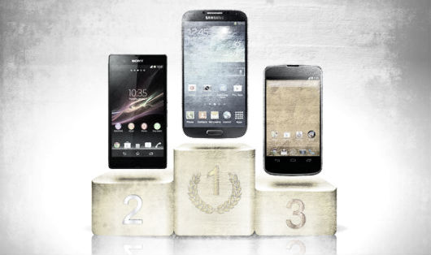

Lo smartphone
Lo smartphone e diventato compagno di vita insostituibile per milioni di persone. Nel giro di pochi anni i telefoni touchscreen sono diventati uno standard oggi .
I.O.S
Apple
iOs ad oggi e l oggetto del desiderio per una buona fascia della popolazione. Tanto per essere chiari, iOs e il sistema operativo di iPhone. Steve Jobs ha creduto nella tecnologia touch, l ha semplificata ed ha ideato un prodotto molto piu intuitivo e di facile utilizzo, ovvero l iPhone, dando origine al mercato come lo conosciamo oggi. Con l ultima versione, chiamata iOs 7 sono state aggiunte nuove funzioni, ma la direzione presa sembra essere di diventare "leggermente piu difficile da usare, ma con piu funzioni". La maggior semplicita d uso ha comunque un prezzo, che si paga in liberta di utilizzo. Molte volte operazioni che potrebbero sembrare banali non possono essere effettuate, come ad esempio la condivisione di contenuti tramite bluetooth, impostare una canzone in mp3 come suoneria, collegarlo al pc come se fosse una chiavetta, oppure la copia della rubrica sulla scheda sim.
Chi non ha mai sentito parlare di iPhone? Il fatto di essere il piu famoso, non lo rende comunque il migliore. Android e sicuramente piu evoluto, Windows Phone e ancora piu facile da usare. Perche quindi iPhone ed iPad continuano ad essere l oggetto del desiderio per milioni di persone? I motivi principali sono due e sono quasi gli unici veri vantaggi che iOs ha da offrire. Il primo motivo e il mercato delle applicazioni, che e davvero eccellente. Apple infatti e molto attenta ad ogni singola app che vuole comparire sul suo store, questo riesce a garantire che qualsiasi applicazione aggiuntiva sia perfettamente integrata a livello grafico, sempre fluida e con pochissimi problemi. Il secondo motivo e la costruzione. Hardware e software si sposano alla perfezione e, a parte per i modelli piu datati, la fluidita e ai massimi livelli. Potete stare sicuri che i loro prodotti sono costruiti con un attenzione quasi maniacale ad ogni singolo dettaglio, sono oggetti di design prima di qualsiasi altra cosa, sempre pero a scapito della flessibilita di utilizzo